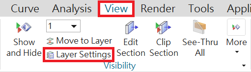
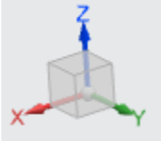
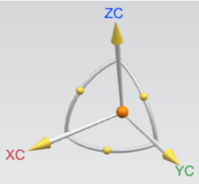
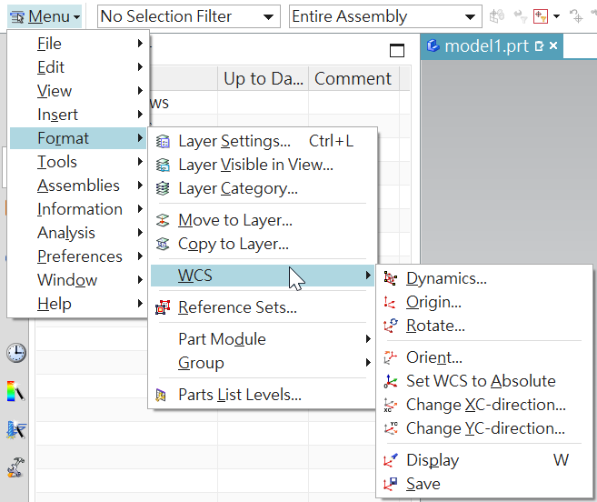

CH1 引言 <<
Previous Next >> CH3 二維草圖
CH2 入門
2.1 啟動NX12並打開文件
2.1.1 啟動NX12
2.1.2 打開一個新文件
-> 單擊螢幕上方的"新建"按鈕
或
-> 瀏覽螢幕左上方的 File（文件）下拉菜單，然後單擊 New（新建）
或
-> 按 ctrl + N
將打開一個新視窗，詢問要創建的新文件的類型、單位、名稱和位置。默認單位是毫米。
-> 輸入文件的適當名稱和位置，然後單擊“確定”。
2.1.3 打開零件文件
->單擊屏幕頂部的"打開或打開最近的零件按鈕
或
->瀏覽屏幕左上方的 File（文件）下拉菜單，然後單擊 Open。
或
-> 按 ctrl + O
將顯示“打開零件文件”對話框。 右側可預覽文件。 可以通過取消核取方塊“預覽”來禁用“預覽”。
->取消開啟零件 （檔案）則單擊取消退出開啟現有檔案
2.2 列印、儲存和關閉文件
2.2.1 列印NX 12圖像
要從當前顯示器"列印"圖像，
->點擊文件→列印
下圖顯示了“列印”對話框。可以選擇要使用的印表機或指定編號的列印份數，紙張尺寸等。您還可以為所有三個選擇比例尺寸。 您也可以選擇
通過單擊來列印，即線框實體模型輸出下拉菜單，如右圖所示側
->取消列印則單擊取消退出列印
2.2.2 保存零件文件
->點擊文件→保存
有五個選項可保存文件：
●保存：此選項將使用創建零件文件時使用的相同名稱將零件保存在屏幕上。
●僅保存工作零件：此選項僅將活動零件保存在屏幕上。
●另存為：此選項允許您使用其他名稱和/或類型將零件保存在屏幕上。 默認類型是.prt。 但是，可以將文件另存為 IGES（.igs）、STEP 203（.stp）、STEP 214（.step）、AutoCAD DXF（.dxf）、AutoCAD DWG（.dwg）、CATIA模型（.model）和 CATIA V5（.catpart）。
●全部保存：此選項將使用現有名稱保存所有打開的零件文件。
●保存書籤：此選項會將屏幕上的當前模型的屏幕截圖和上下文另存為.JPEG文件和書籤。
2.2.3 關閉零件文件
->點擊文件→關閉
如果關閉文件，該文件將清除工作記憶和任何更改不保存將丟失。 因此，請記住選擇“保存並關閉”、“另存為並關閉”、"保存所有並關閉"或"保存所有並退出"。 在前三個選項的情況下，已選擇，否則所有零件都將關閉，但NX12會繼續運行。
2.2.4 退出NX12
->單擊文件→退出
如果打開了文件並在未保存的情況下進行了更改，則將詢問是否真的想退出。
->選擇否，保存文件，然後退出
->選擇是，不保存文件，退出
2.3 NX12介面
2.3.1.1 滑鼠左鍵（MB1）
滑鼠左鍵用於選擇圖標、菜單、和圖形屏幕上的其他實體。 在任何功能上雙擊 MB1 都會自動打開“編輯對話框”。 單擊對像上的 MB1，使用戶可以快速使用如下所示的幾個選項。 這些選項將在下一章中討論。
2.3.1.2 滑鼠中鍵（MB2）->選轉、縮放
MB2 或滾動按鈕用於通過按下來旋轉對象，按住並拖動， 模型繞單個軸旋轉。 如果您同時按住 MB2 位置幾秒鐘，它將固定旋轉點（出現橙色圓圈符號）您可以在對象周圍拖動以查看。如果是滾動按鈕，則可以通過滾動對象來放大和縮小。 單擊 MB2 將如果打開了任何彈出窗口或對話框，還可以執行“確定”命令。
2.3.1.3 滑鼠右鍵（MB3）
MB3 用於訪問用戶界面彈出菜單。 隨後彈出的選項，具體取決於選擇模式和應用。 下圖顯示在草圖中應用。 選擇功能後單擊 MB3 將提供與該功能相關的選項（對象/操作菜單）。單擊 MB3 並按住該按鈕將在功能周圍顯示一組圖標。這些圖標帶有可應用於功能的可能命令。
2.3.1.4按鈕組合
放大/縮小：
->同時按住 MB1 和 MB2 並拖動
或
->按住鍵盤上的 ctrl 按鈕，然後按住並拖動 MB2
或
平移：
->同時按住 MB2 和 MB3 並拖動
或
->按住鍵盤上的 shift 按鈕並按住 MB2
菜單快捷方式：
->按住 ctrl + shift 和 MB1、MB2 和 MB3 可以看到功能的快捷方式，直接草圖組和同步建模組
2.3.2 NX12視窗
下圖顯示了打開文件時 NX12 窗口的典型佈局。 這是 NX12 的網關，從中可以選擇要處理的任何模塊，例如建模，必須注意這些工具欄可能不完全在同一位置如下圖所示。 工具欄可以放置在屏幕上的任何位置或位置。查找相同的圖標集。
2.3.2.1 功能區欄
功能區界面使用戶能夠輕鬆訪問不同的命令，而無需縮小圖形窗口區域。 命令組織在不同選項卡下的功能區欄中和組，以便於識別和訪問。例如，在上圖所示的功能區欄中，我們具有“起始”，“曲線”等選項卡。 在裡面主頁選項卡中，我們具有直接草圖，特徵，同步建模和曲面組。 並且在每個組中，我們有一組功能強大的命令。
2.3.2.2快速訪問工具欄
快速訪問工具欄具有最常用的按鈕（保存、撤消、重做、剪切、複製、粘貼和最近的命令）以加快建模過程。 您可以輕鬆地將這些按鈕自定義為如下圖所示。
2.3.2.3命令查找器
如果您不知道在哪裡可以找到命令，請使用“命令查找器”。 若忘記了
樣式掃描的位置。
->在命令查找器中輸入掃描
->將鼠標懸停在樣式掃描上
->NX將顯示命令路徑：菜單→插入→掃描→樣式化掃描
或
->在命令查找器中輸入掃描
->在命令查找器窗口中單擊樣式化掃描
2.3.2.4 頂部
頂部邊框中最重要的按鈕是菜單按鈕。 大部分功能菜單中提供了該軟件的版本。 選擇欄顯示選擇選項。 這些選項包括用於選擇特徵的“過濾器”，“零部件/裝配體”和“捕捉點”。 最“視圖”選項卡中的常用按鈕也顯示在“頂部邊框”中。
2.3.2.5 資源欄
資源欄使用很少的用戶界面就可以在一處顯示多個頁面的圖標空間。 NX 12將所有導航器窗口（裝配體、約束和零件）放置在資源欄中、以及重用庫、HD3D工具、Web 瀏覽器、歷史記錄面板、Process Studio、製造嚮導、角色和系統場景。 兩個最重要的寡婦是解釋如下。
零件導航器
->單擊零件瀏覽器圖標，第三個資源欄頂部的圖標零件導航器提供可視化表示要素中的父子關係以樹型格式在單獨的窗口中工作。
它顯示了在此期間使用的所有原語，實體造型。它允許您執行各種編輯這些功能上的操作。例如，您可以使用零件導航器來抑製或取消抑制功能或更改其參數或位置尺寸。刪除綠色的勾號將“取消”功能。該軟件會給警告如果父子關係被打破取消任何特定功能。
零件瀏覽器可用於所有NX應用程序而不僅僅是建模。但是，您只能執行功能編輯操作當您在“建模”模塊中時。在零件瀏覽器中編輯特徵將自動更新模型。特徵編輯將在後面討論。
歷史
->單擊歷史記錄圖標，資源欄頂部的第七個圖標歷史選項板提供對最近打開的文件或其他選項板條目的快速訪問。有可能用於重新加載最近處理過的零件或重複添加一小組調色板項目的模型。
歷史選項板會記住上一次使用的選項板選項以及會話的狀態當它關閉時。 NX存儲已加載到會話中的選板並將其還原到下屆會議。移動零件時，系統不會清除歷史記錄選板。
2.3.2.6 提示線
提示行顯示提示消息，指示接下來需要採取的行動。在 - 的右邊
提示行，狀態行位於顯示有關當前選項的消息或最近完成的功能。
進度表顯示在提示行中當系統執行耗時的操作，例如加載大型裝配體。的
儀表顯示的操作百分比完成了。操作完成後，系統顯示下一個適當的提示。
2.3.3 幾何選擇
可以選擇過濾方法，這有助於在緊密的模型中輕鬆選擇幾何。NX12操作選項取決於所選實體。項目的選擇可以基於實體的程度，例如選擇幾何實體，特徵和零部件。選擇方法可以選擇選擇選擇工具欄中的圖標之一。
2.3.3.1特徵選擇
單擊任何圖標，可以選擇零件文件中的特徵。它不會選擇基本實體，例如邊緣，面等。選定的特徵也可以應用於一部分或整個根據要求組裝。除此之外，可以進一步縮小特徵的過濾範圍在下拉菜單中選擇所需選項之一，如
數字。 例如，選擇“曲線”將僅高亮顯示屏幕。 默認值為“無選擇過濾器”。
2.3.3.2常規對象選擇
將鼠標光標導航到實體附近，直到用突出顯示它為止洋紅色，然後單擊鼠標左鍵以選擇任何幾何實體，功能或組件。如果要選擇隱藏在顯示的幾何圖形後面的實體，將鼠標光標放在屏幕上該區域附近，以便光標球佔據了投影在屏幕上的隱藏幾何的一部分屏幕。幾秒鐘後，球形光標變為加號如圖所示。單擊鼠標左鍵（MB1）以獲取選擇確認對話框，如下圖如下。
這個 QuickPick 菜單由實體列表組成捕獲在光標的球內。的實體按以下升序排列實體的程度。例如，邊和頂點指定為較低給出立體的數字更高的數字。通過移動光標顯示的數字，NX12將用洋紅色突出顯示屏幕上的相應實體。
2.3.4 使用者偏好
2.3.5 應用
可以使用“文件”選項打開應用程序位於主窗口的左上角或功能區欄上方的“應用程序”選項卡。 可以選擇要運行的應用程序類型。例如，可以選擇“建模”、“製圖”、"組裝"。
2.4 圖層
圖層用於將對象存儲在文件中，並將對象收集到文件中。有條理和一致的方式。與簡單的視覺工具（例如顯示和隱藏），圖層提供一種永久的方式來組織和管理文件中對象的可見性和選擇性。
2.4.1 圖層控制
使用NX 12，您可以使用“圖層”控制對像是可見還是可選。一層是NX 12中所有對象必須具有的系統定義的屬性，例如顏色，字體和寬度。那裡NX 12中有256個可用層，其中之一始終是工作層。 256個圖層中的任何一個都可以被分配給四種狀態分類之一。
•工作
•可選
•僅可見
•不可見
工作層始終可見並且可以選擇。啟動新零件文件時，第1層是默認的工作層。當工作層更改為另一種類型的圖層時，先前的工作層會自動變為“可選”狀態，然後將其分配為“僅可見”或“不可見”狀態。可以在一圖層上的對像數量不受限制。可以自由選擇要創建的圖層對象及其所在層的狀態。要將狀態分配給一個或多個圖層，
->選擇查看→圖層設置
但是，應該注意，在關於圖層將有利於保持一致性文件之間。

2.4.2 分層命令
練習“圖層”中的命令。 首先，我們將創建兩個模型按如下方法處理。
->選擇文件→新建、命名檔案並選擇要在其中保存文件的文件夾。 選擇單位為毫米。 選擇文件類型作為模型
->選擇菜單→插入→設計特徵→錐
->在類型下選擇直徑和高度
->點擊確定
->右鍵單擊屏幕，然後選擇“東方視圖”→Trimetric
->右鍵單擊屏幕，然後選擇“渲染”。樣式→陰影
您將能夠看到類似於圖片的實心圓錐在右邊。
現在讓我們練習一些圖層命令。
->選擇查看→移動到圖層
系統將要求您選擇一個對象
->將光標移到圓錐上並單擊，使其突出顯示
->點擊確定
->在窗口頂部的“目標圖層”或“類別”空間中，鍵入25，然後單擊“確定”。
好圓錐現在已經到達第25層。 它不再是在第1層中看到。
->要查看圓錐體，請單擊查看→圖層設置
->可以看到第25層有對象，而默認的工作層1沒有對象。錐體將再次出現在屏幕上。 儲存檔案，因為我們將在本教程的後面部分中使用它。
2.5 座標系統
2.5.1 絕對坐標系（CSYS）
代表絕對坐標系的模型

2.5.2 工作坐標系（WCS）
工作坐標系（WCS）是您要用於構造時要使用的確定特徵的方向和角度。 WCS的軸表示為XC，YC和ZC。（“ C”代表“當前”）。它是可能有多個坐標零件文件中的系統，但其中只有一個可以是工作坐標系。

2.5.3 移動 WCS
移動和旋轉 WCS
->選擇菜單→格式→ WCS

2.6 工具列
CH1 引言 <<
Previous Next >> CH3 二維草圖